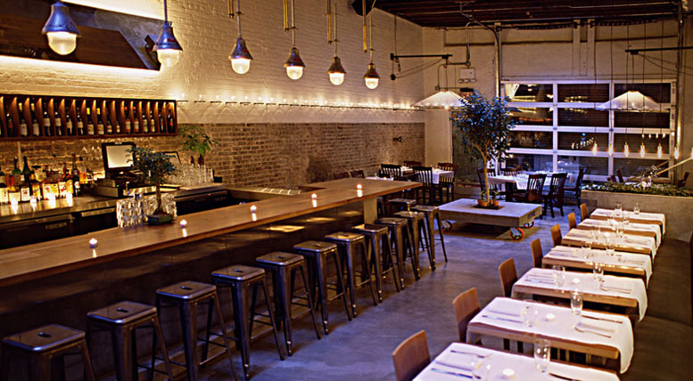

14 Fresh, New Outdoor-Dining Options Around New York
At last: It's warm and it seems safe to assume it will stay that way, which means it's time to bask in the sun and eat en plein air. Plenty of places have outside vibes, yet a select few offer patios, gardens, sidewalk seating, and full-blown access to the sunshine. This year, mix things up by going somewhere new — here are Grub's top picks: Untitled This new restaurant, run by recent James Beard Award winner Michael Anthony, boasts a 52-seat terrace that wraps around the corner of the Whitney Museum. At the moment, only drinks are available outside, but full lunch and dinner services are set to launch soon. There's also another large terrace on the eighth floor, attached to the more casual Studio Café.
Vic's Since Vic's opened in the cold weather, this season marks the first that there's outdoor seating. Some of Hillary Sterling's new menu items are ramp pizza and burrata with charred-nettle toast.
Upland Over in Gramercy, Justin Smillie is serving springtime dishes like Meyer-lemon pizza outside.
Rosie's Marc Meyer and Vicki Freeman's new Mexican restaurant has seats outside on Second Avenue, as well as retractable doors that give an open-air feel.
Little Park Andrew Carmellini's newest restaurant debuted outdoor sidewalk seating, available daily (weather dependent) from 11:30 a.m. through the evening.
The Upsider Outdoor seating in midtown east is hard to come by, but this new-ish spot has a great wrap-around patio, and floor-to-ceiling windows.
Hudson Garden Grill Stephen Starr’s catering division oversees the first full-service restaurant in the New York Botanical Gardens, which can seat 120 people on its beautiful patio. It takes only 20 minutes to get there from Grand Central.
Miss Lily's 7A The East Village offshoot of the Jamaican restaurant opened last year, but because of construction, the outdoor sidewalk seating only launched last week. What better place to enjoy rum punch and jerk chicken?
Streetbird Rotisserie Marcus Samuelsson's restaurant will launch outdoor patio seating in a few weeks, and it'll surely be as bright and colorful as the interior. Mulberry Project The Little Italy bar's "Tulum patio" feels like a real escape from the city. Chef Carmine di Giovanni’s new dishes include lobster sliders, chicken wings, and three types of grilled-cheese sandwiches.
Café Clover This health-conscious West Village restaurant has a patio that can seat 60. It's the perfect place to enjoy light fare like scallop crudo and seared soft-shell crab. Eli's Essential Wine Bar Eli Zabar's newest establishment, on Madison Avenue at 91st Street, has sidewalk seating. There are 20 wines by the glass, starting at $10, and dishes like morel toast.
The Jane Rooftop For the first time ever, the Jane Hotel's stunning rooftop will be open to plebeians (walk-in customers). There's no food — only cocktails — but the terrace offers unobstructed waterfront views of the Hudson River.
Bien Cuit The Boerum Hill bakery just unveiled a patio out back, which is open all day. It's the perfect place to sit and eat pastries.